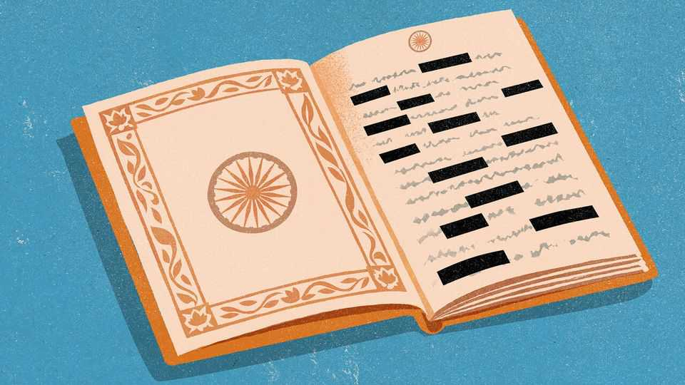

Indians’ rights have been chipped away for decades
But interfering with the sanctity of elections is a step too far

Oct 22nd 2026
THE CONSTITUTION of India is filled with all sorts of noble ideas. The preamble promises every citizen justice, liberty and equality, to say nothing of dignity. The body lays out a dizzying array of institutions designed to secure those rights. And then, almost as soon as the ink had dried on the document, India’s new leaders started having second thoughts. The first amendment to the constitution imposed “reasonable restrictions” on the right to free speech. The 24th made explicit that Parliament can alter even the parts about fundamental rights. Things reached a nadir with the 42nd amendment, passed in 1976 during a state of emergency imposed by Indira Gandhi, when, not satisfied with further curtailing Indians’ rights, Parliament also created something called “fundamental duties”.
The Emergency eventually ended. But the chipping away of rights did not. Successive governments have kneecapped or subverted independent institutions. Narendra Modi has continued this cross-party tradition since coming to power in 2014. Under his rule investigative agencies are seen by many as the enforcement arm of his Bharatiya Janata Party (BJP), Parliament has frequently resembled a rubber stamp, and the courts have become curiously uninterested in upholding individual liberty. Indians, for the most part, have turned a blind eye. For the vast majority, there are more pressing concerns.
Yet there is one right Indians take with deadly seriousness. That is the right to vote. Every five years they march to the polls to express approval or frustration in vast elections that are widely considered free and fair. In the interim politicians rule with imperiousness, pretend that voters don’t exist and help themselves to public money. Fine. So long as citizens believe they have the power to punish their rulers come election day, they will put up with a lot. This is the essence of India’s social contract.
The sense that it is being violated is why the latest protests against Mr Modi’s government have touched a nerve. Some 130m of the country’s nearly 1bn registered voters have been struck off electoral lists in a “special intensive revision” that the government says is necessary to “purify” the rolls of duplicates and the dead. Critics say it has disenfranchised millions of citizens, perhaps tens of millions. Both of these things may well be true. Last month the Indian Express, a newspaper, revealed that two of the three commissioners of the supposedly independent Election Commission of India had objected at least 14 times to decisions taken under its chief, Gyanesh Kumar. The commission denied this. But protesters have spent much of October on the streets demanding his resignation, painting him as a BJP stooge.
Well before the special revision the BJP had in state after state used sleazy political tactics and its control of institutions to break up rival parties and lure away their lawmakers. Voters accepted that, just as they once accepted armed men routinely capturing polling booths and stuffing ballots in the more lawless parts of the country. And just as they still accept rampant vote-buying, both legal (cash handouts from the state) and illegal (cash handouts from candidates). All of this is seen as part of the game. Under dispute now is the much more fundamental question of whether the game itself is fixed.
India’s political class should consider itself lucky. In next-door China, the Communist Party has to do something much more difficult than winning elections. China’s social contract requires the state to consistently raise living standards, the quality of life and national power in exchange for which citizens keep their noses out of politics. All Indian politicians have to do is to feign interest in their constituents once every five years. Yet instead of accepting this sweetheart deal, Mr Modi’s government is doubling down by suppressing protests that are attempting to enforce it.
Anyone who has ever set foot in an Indian kitchen will be familiar with the pressure cooker, a terrifying contraption that lets out an almighty shriek to vent its accumulated steam at predictable intervals, not unlike an election cycle. If that usual outlet is blocked, however, one of two things can happen. A safety valve breaks, letting loose a paroxysm of scalding steam everywhere. Or the pressure grows—and grows and grows—until there is a catastrophic structural failure. It is to prevent precisely such an explosion that India’s founders added safety valves to the constitution. To block them all is not just dangerous. It is foolish. ■